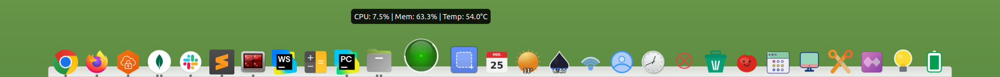

Fast launcher workflow
Quick access to your core apps, work surfaces, and utilities without visual noise or startup drag.
A dock that adapts to your workflow.
Fast, customizable, and extensible dock application -- fully written in Python, with built-in applets and full Linux desktop integration.

Docking combines launcher speed, desktop awareness, and a modular widget system in one polished surface.
Quick access to your core apps, work surfaces, and utilities without visual noise or startup drag.
Ship a dock that already knows how to show system status, weather, media, timers, notes, and more.
Adjust the dock to your desktop instead of adapting your desktop to the dock.
Keep the dock where it belongs, visible when needed and out of the way when focus matters.
Built for Linux setups that span more than one desktop environment and more than one way of working.
Add your own widgets and behaviors without compromising the dock’s main runtime model.
Small tools with real utility: glanceable information, richer controls, and compact workflow helpers. Browse the full applet catalog without leaving the page.
Track sessions, token usage, and estimated spend across Claude, Codex, and OpenCode.
Ambient controls for a calmer desktop atmosphere.
NASA's Astronomy Picture of the Day, as a daily thumbnail with title and explanation in the tooltip.
A launcher-style entry point for your installed apps.
Alt+F2-style command launcher with app matching, terminal mode, file arguments, and a searchable application list.
Thermometer icon with degree-only label for hottest lm-sensors temperature, plus fan RPM tooltip and Celsius/Fahrenheit toggle.
Battery level and charging status at a glance.
Quick Bluetooth visibility and device awareness.
Pinned shortcuts for the places and links you revisit.
Screen brightness control without leaving the dock.
Compact date browsing and schedule context.
Keep the session awake, with optional timers for focus blocks or long-running tasks.
Quick calculations without leaving the dock.
Live exchange-rate pairs with a sparkline right on the dock icon.
Track selected coins and NFT collections with live prices and a compact sparkline.
Hacker News top headlines with manual navigation and next batches loaded up to 100 items.
TLS certificate expiry monitor with a color-coded shield and days-remaining badge.
Camera privacy indicator that shows a red dot when a process holds a video device.
Microphone mute toggle with a red privacy dot while an app is capturing input.
Keep recent snippets close and move faster between repeated tasks.
Clean time display with polished, always-visible presence.
Multiple local-time alarm presets with weekday repeats, snooze, and dismiss controls.
Pick and inspect colors directly from the desktop.
Tracks time at desk vs away from X11 idle signals, with today's total in the badge.
Desktop actions and surface shortcuts in one place.
See running containers at a glance and stop or restart them from the dock menu.
A lightweight reminder to keep healthy breaks in view.
See and switch your current keyboard layout.
Caps and Num Lock LED states for keyboards without physical indicators.
Recent Last.fm and Libre.fm scrobbles with album art, profile shortcuts, and refresh controls.
Current lunar phase and a bit of night-sky context.
Playback status and quick transport controls.
Connection state and quick network awareness.
Unread state and notification shortcuts in one widget.
A playful companion that lives in the dock.
Focused work sessions with built-in timer rhythm.
Switch performance modes based on how you work.
Capture short notes without opening a larger app.
A rotating quote for a little personality in the dock.
Jump back into documents you touched most recently.
Launch capture actions directly from the dock.
Lock, logout, shutdown, and session actions close at hand.
One-click internet speed test with a red-to-green speedometer dial and the Mbps result on the badge.
Healthy movement reminders during long sessions.
Live CPU, memory, and system activity in one widget.
A daily historical fact built right into the dock.
Trash state and cleanup access without opening a file manager.
Safe-remove access for mounted removable USB storage devices.
Short knowledge prompts for a lighter desktop moment.
Convert between units directly from the dock.
Shorten URLs via is.gd and copy to clipboard.
Drop a file onto the applet to upload to tmpfiles.org and copy the temporary share URL.
Playback and audio control integrated into the same dock surface.
Forecast, conditions, air quality, and Celsius/Fahrenheit display at a glance.
Sunrise, sunset, twilight phases, and a rich solar dial for selected cities.
Force-close any window with a single click.
Switch and track workspaces from the dock.
Docking is open source and built for people who want control, extensibility, and a clean code path into custom workflows.
git clone https://github.com/edumucelli/docking.git
cd docking
python3 -m venv --system-site-packages .venv
source .venv/bin/activate
pip install -e ".[dev]"Docking gives you control without getting in your way.
Docking supports X11 and Wayland through backend-specific integrations: GNOME / Mutter via the companion Shell bridge, KDE Plasma 6 through the native KWin backend, wlroots-style compositors via layer-shell, and reduced mode when compositor integration is unavailable.
Yes. Docking has an extensible applet system. Each applet is a Python package with a state, render, and applet module. You can add custom widgets and behaviors without modifying the dock's core runtime.
Yes. Docking supports X11 and Wayland. Native Wayland support is selected per desktop: GNOME Shell bridge, KWin, wlroots layer-shell protocols, or reduced mode when needed.
Yes. Docking is licensed under GPL-3.0-or-later and fully open source. The code is hosted on GitHub and contributions are welcome.
Install a build, star the project, and shape a Linux dock that fits the way you actually work.